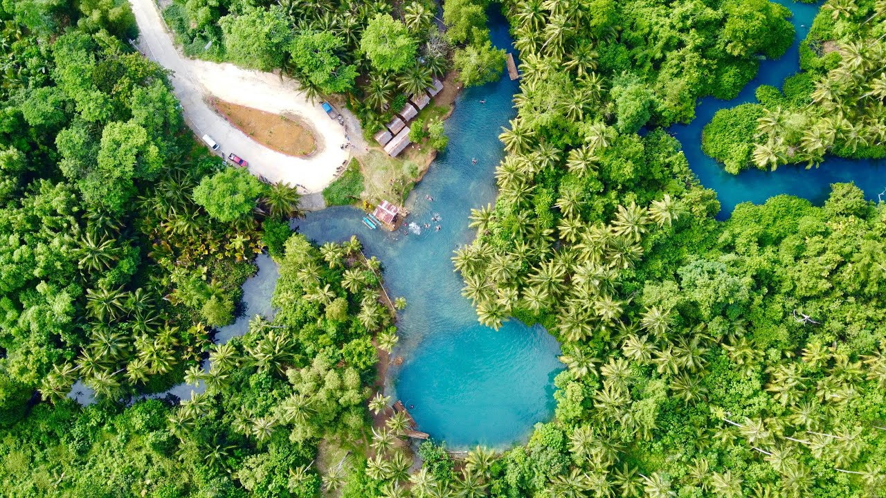

div border
Exploring the Natural Wonders of Davao Oriental
Nestled in the southeastern part of Mindanao, Davao Oriental is a province blessed with breathtaking natural attractions. From pristine beaches and waterfalls to lakes and sandbars, Davao Oriental has a lot to offer for nature lovers and outdoor enthusiasts. In this blog, we'll highlight some of the top natural destinations you shouldn't miss when visiting this beautiful province.
San Victor Island
One of the most popular attractions in Davao Oriental is the picturesque San Victor Island. Located off the coast of Governor Generoso town, this tiny island paradise boasts powdery white sand beaches and crystal clear waters perfect for swimming, snorkeling, and diving. Walk along its coastline shaded by coconut trees or relax on a beach swing and enjoy stunning views of the sea and sky. For a bit of adventure, try cliff diving into the ocean from the island's rocky cliffs.
Curtain Falls
Tucked within theremote village of Marayag in Lupon town is the majestic Curtain Falls. Cascading beautifully into a natural pool below, this two-layered waterfall earned its name from its curtain-like appearance. The journey to this hidden gem involves traversing rivers and rainforests which is an adventure in itself. Take a refreshing dip in its cold waters or simply relax on the rocks and admire the wilderness surrounding you.
Lake Carolina
This stunning crater lake is located high up in the hilly landscapes of San Isidro town. Formed by an ancient volcanic eruption, Lake Carolina is a magnificent sight to behold with its clear blue-green waters surrounded by verdant forests. Walk along the lake and bask in the peaceful ambience. Go on a photo hunt around the lake capturing its ethereal beauty at different spots.

Poo Sandbar
Arguably the most iconic destination in Davao Oriental is the Poo Sandbar in Governor Generoso town. This unique 7-kilometer long sandbar is shaped like a hook or croissant which gave it the name "Poo", meaning hook in the local Kamayo language. During low tide, you can walk far out along the sandbar and surround yourself with the sea. Local fishermen also set up picnic tents here where you can enjoy a meal along with the fantastic scenery. Watching the colors of the sky transform during Davao Oriental's famous sunsets from Poo Sandbar is an experience like no other.
Chasing Thrills And Scenic Vistas: Must-Try Activities In Davao Oriental

- Island Hopping - Hop from one picturesque island to another around Pujada Bay and enjoy swimming, snorkeling, beach combing or just basking in the sun. Popular islands to visit include Pujada Island, Wahoo Island, Pearl Farm Island, etc.
- Cliff Diving - For thrill seekers, try cliff diving into the clear waters around San Victor Island. Just be sure to check depth and conditions first.
- Trekking - Trek through verdant jungles and mountains to reach stunning attractions like Curtain Falls, Kinablangan Falls, and Mount Kampalili. Don't forget to stop for breathtaking views along the way.
- Rafting - Ride the rapids of Davao Oriental's rivers like Mati River, Lulugayan Falls or Bobonawan River for an adrenaline rush.
- Snorkeling/Diving - Explore the colorful underwater marine life around San Victor Island, Wahoo Island, and other coastal spots filled with coral reefs and diverse sea creatures.
- Birdwatching - Spot some exotic birds like the Philippine eagle, kingfisher, oriental darter and more around the forests of Mount Hamiguitan and Governor Generoso.
- ATV Riding - Ride through scenic off-road trails overlooking the coast around Governor Generoso on a thrilling ATV adventure.
- Surfing - Ride the waves along the eastern coasts of Mati and Governor Generoso, especially around Dahican Beach.
- Ziplining - Get a birds-eye view of forests, rivers and more as you zip through Davao Oriental's many exciting zipline courses.